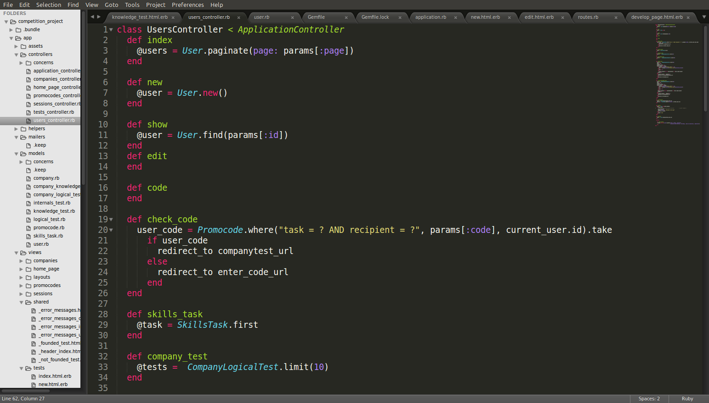
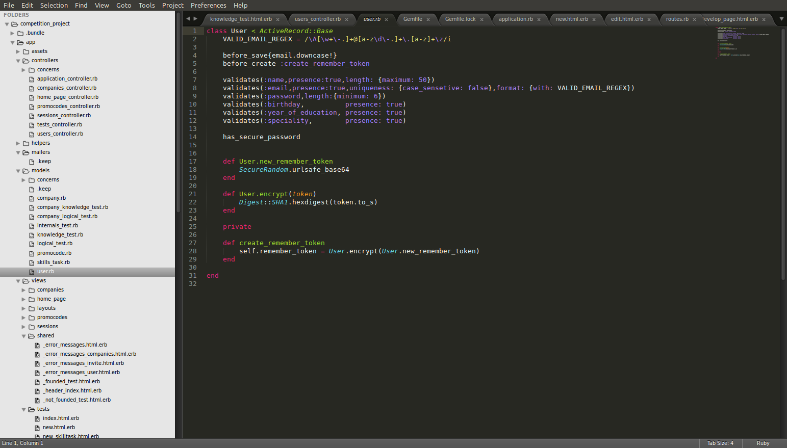
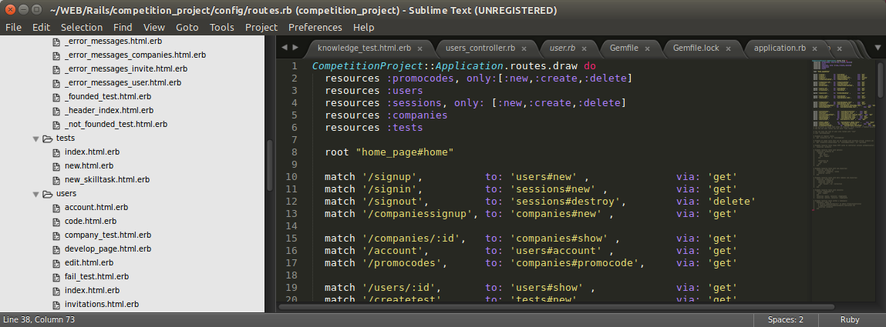
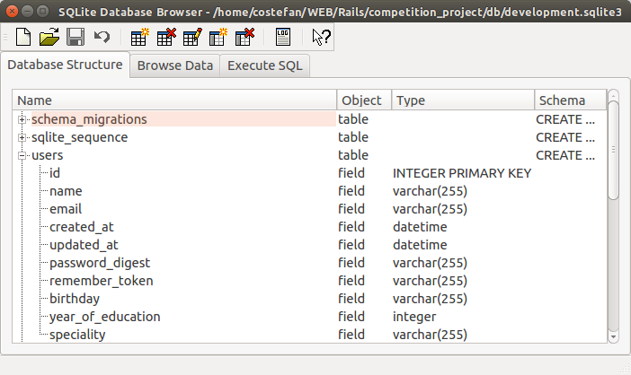

Профіль корстувача
Утворити кабінет користувача з усіма належними та необхідним частинами (реєстрація, вхід, редагування та додання інформації).
Опис будови модулю «Користувачів»:

-
Для модулю користувача у данні версії роботи можливі наступні функції:
- show - виводить головну сторінку для поточного користувача.
- index - виводить список усіх користувача.
- new - утворює новий обліковий запис.
- create - зберігає новий обліковий запис.
- edit - дозволяє редагувати вже існуючий профіль.
- code - перегляд сторінки для введення коду.
- check_code - захисна функція для перевірки правильності введеного коду
- signed_in_user - захисна функція(сессія), що не дає переглядати і змінювати незалогіненому користувачу змінювати інформацію .
-
Модуль юзеру містить багато функцій обробок інформації тому що це основа системи:
- invitations - виводить головну сторінку для поточного користувача.
- account - виводить сторынку з акаунтом.
- user_params - приватна функцыя для передачы даних зы сторынки в бд.
Взаємодія з БД:
 Ми бачимо що забезпечена безпека паролів завдяки методу Rails has_secure_password. При реєстрації для правильності заповнення бази, від людини будуть вимагатися наступні дані: ім’я, курс навчання ,спеціальність та дата народження. Для перевірки правильності введеної пошти використовується шаблон VALID_EMAIL_REGEX. Для кожного входу юзера утворюється власний токен безпеки, що зберігається у браузері.Налаштуванн шляхів:
 Для коректної роботи проекту, модуль «користувачів» був доданий до ресурсного роутингу (тобто усі стандартні сторінки автоматично будуть підхоплені при виконанні додатку). Але були дописані деяки шляхи для виконання тих чи інших дій які може виконувати юзерПредставлення у таблиці:
Для кожного «користувача» передбачаються наступні поля:
- name - Ім’я.
- email - Пошта для авторизації.
- manager - курс навчання
- manager - спеціальність
- created_at - Час утворення запису.
- updated_at - Час утворення запису.
- password_digest - зашифрований пароль.